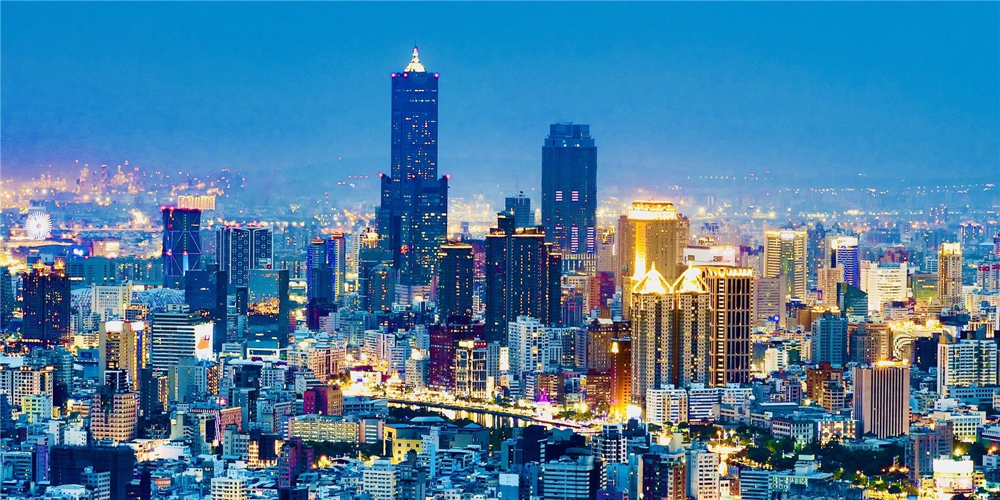

선거 전 마지막 ‘황금 토요일’… 커원저·장완안 한 무대, 한궈위는 가오슝 지원, 라이칭더는 신베이 결집

투표일(11월 28일) 직전 마지막 토요일인 21일 밤, 대만 각지가 대규모 유세로 달아올랐다. 가장 주목받은 장면은 타이베이 시정부 앞 광장에서 열린 민중당 전국 집회였다. ‘민중이 함께하면 대만은 반드시 이긴다(民眾相挺 台灣必贏)’를 구호로 내건 이 집회에 민중당 창당 주석 커원저(柯文哲)와 황궈창(黃國昌) 주석이 민주주의를 상징하는 전자 횃불을 들고 입장했고, 국민당 소속 장완안 타이베이 시장이 무대에 올랐다.
광고 문의 · 300×250장 시장은 “2026년에는 반드시 이겨야 한다”며 국민당과 민중당이 함께 싸워 준 데 감사를 표했다. 커원저는 장 시장에게 “차근차근 해 나가면 이긴다”고 격려하면서, 타이베이 유권자들이 “정직하고 선량한 사람”을 뽑아야 하며 대규모 국회의원 소환 운동과 사회 갈등을 부추기는 쪽은 안 된다고 말해 민진당을 겨냥했다. 민중당은 참가 인원이 3만 명을 넘었다고 밝혔지만, 중앙사는 현장 인원을 약 1만 명으로 전했다.
남부 승부처 가오슝
남부 최대 격전지 가오슝에서는 국민당 커즈언(柯志恩) 후보가 펑산(鳳山)구 지하철역 인근 공터에서 ‘가오슝 되찾기’ 대형 유세를 열었다. 주최 측은 3만 명 이상이 모였다고 밝혔다. 입법원장 한궈위(韓國瑜)는 세 번째로 지원 유세에 나서 커 후보를 “마쭈(媽祖)가 가오슝에 내린 최고의 선물”이라고 치켜세웠고, “민진당은 가오슝 사람의 아버지가 아니다”라며 정권 교체를 호소했다. 왕진핑(王金平) 전 입법원장도 무대에 올랐다. 커 후보는 당선되면 기존 태양광 패널을 철거하고 저수지 태양광 설치를 허용하지 않겠다고 공약했다.
같은 날 민진당 라이루이룽(賴瑞隆) 후보는 오전 링야(苓雅)구 시장을 돌며 표심을 다진 뒤 오후 치산(旗山)구에서 대형 유세를 열었고, 줘룽타이(卓榮泰) 행정원장이 지원 연설에 나섰다. 라이 후보는 남은 일주일을 ‘황금 주간’으로 규정하고 라이칭더(賴清德) 총통과 차이잉원(蔡英文) 전 총통 등을 가오슝 유세에 초청하겠다고 밝혔다.
민진당, 신베이·타이베이 동반 결집
북부에서 민진당은 신베이시 싼충(三重)의 한 중학교 운동장에서 신베이 시장 후보 쑤차오후이(蘇巧慧)와 타이베이 시장 후보 선보양(沈伯洋)이 함께하는 ‘양류후이쥐(洋流慧聚)’ 유세를 열었다. 당 주석을 겸하는 라이칭더 총통은 두 후보를 상대 공격 대신 정책과 긍정적 메시지로 선거를 치르는 새 세대 정치인이라고 소개하고, “싼충에서는 이기는 것만으론 부족하고 크게 이겨야 한다”고 독려했다. 라이 총통은 또 협박·회유·흑색선전과 함께 중국의 선거 개입에 경계해야 한다고 강조했다. 현장 인원 추산은 매체별로 2만~3만 명으로 엇갈렸다.
범람(藍)·백(白) 진영은 ‘남북 연대’와 정권 견제를, 녹(綠) 진영은 ‘세대교체’와 외부 개입 경계를 각각 앞세우며 막판 프레임 경쟁을 벌이고 있다. 양 진영은 마지막 주말인 27일 전후로 다시 총력 유세를 예고하고 있다.
· 聯合報
· 中央社
· 自由時報
· 公視新聞
· 風傳媒